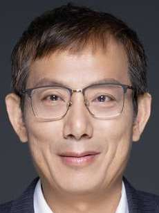

With four new Premium Members joining the seL4 Foundation during
the past few weeks, we now welcome their representatives on the
seL4 Board. The new Board Members are:

Dr. Feng Zhou represents
Horizon
Robotics, where he is a Fellow. He has 15 years of academic
as well as 15 years of industry experience in video/image
compression & processing, computer vision, artificial
intelligence, and ASIC processor architecture.
Ian Xu represents
Li Auto,
where he serves as Vice President, leading Computing
Platform design and development including hardware, OS and
run-time environment. His experience is in the design and
development of networking and wireless communication products.
Dr Matthew P. Grosvenor
represents
Jump Trading,
where he specializes on measurement and optimization of
high-performance and low-latency network systems. Matthew is a
former member of the Trustworthy Systems research group that
developed seL4.
Qiyan Wang represents
NIO, where he
leads a global R&D team responsible for Vehicle Operating
System, Connected Vehicle Cloud, Vehicle Digital Architecture,
Cyber Security, and Vehicle Software Integration and
Validation.
{kind=link}
{kind=link}
{kind=link}
{kind=link}